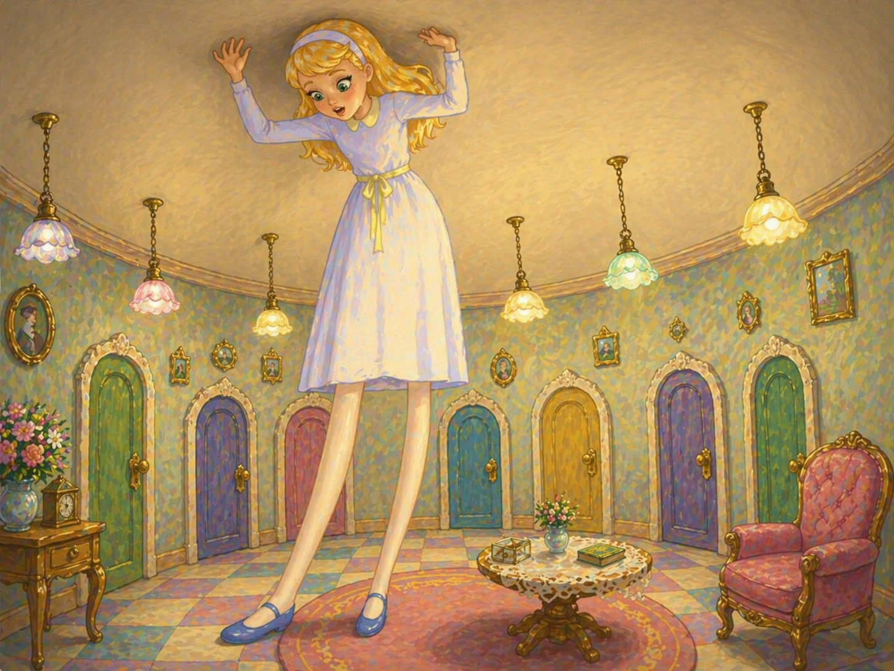
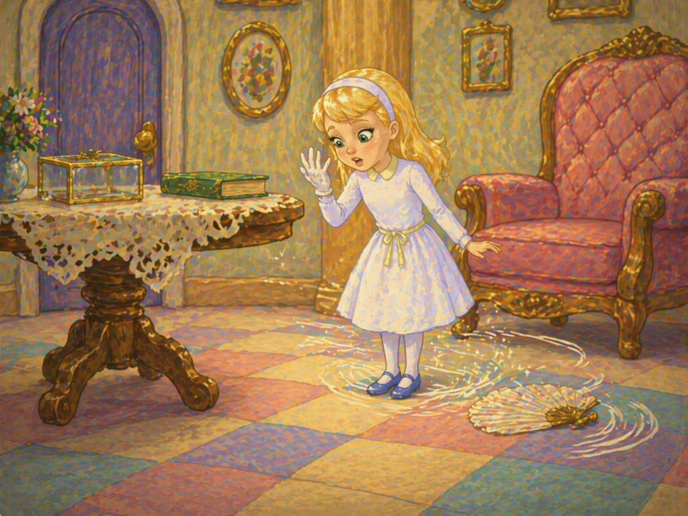
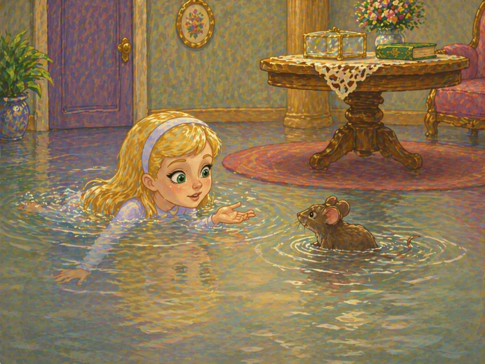
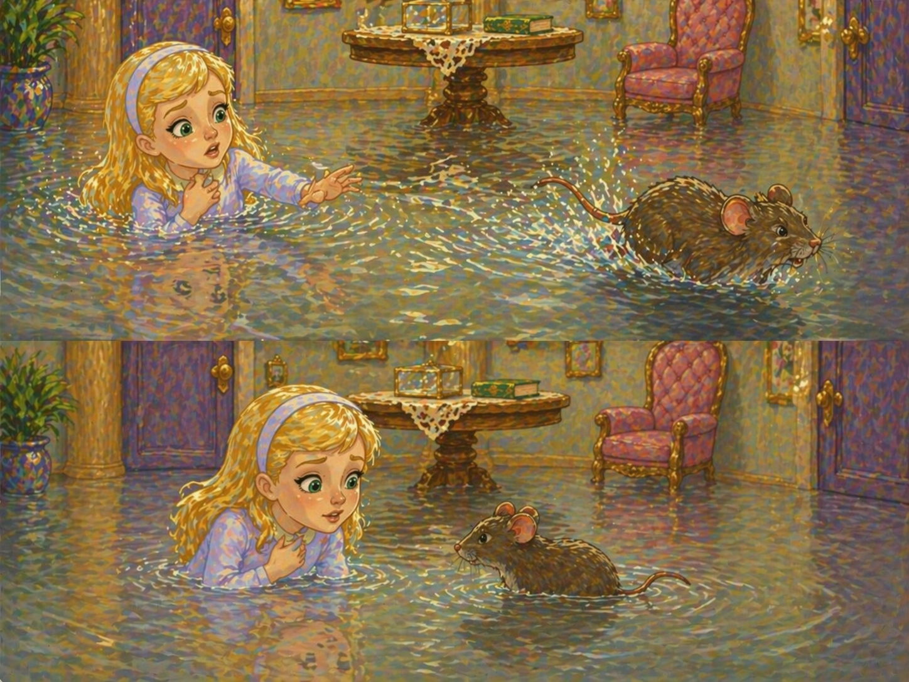

🎧 Слушай главу
- Ach jak zdumiewająco! Coraz zdumiewajęcej! - krzyknęła Alicja. Była tak zdumiona, że aż zapomniała o poprawnym wyrażaniu się. - Rozciągam się teraz jak największy teleskop na świecie. Do widzenia, nogi! - Spoglądając w dół, Alicja zauważyła, że jej nogi wydłużały się coraz bardziej i ginęły w oddali. - O moje biedne nóżki, któż wam teraz będzie wkładał skarpetki i buciki? Bo ja z pewnością nie dam sobie z tym rady, będą c od was tak daleko. Musicie sobie teraz radzić same.

"Powinnam jednak być dla nich uprzejma - pomyślała Alicja - bo mogą nie pójść tam, gdzie ja będę chciała. Zaraz, zaraz... Wiem. Będę im dawała po nowej parze bucików na każde Boże Narodzenie".
Tu Alicja zaczęła zastanawiać się, w jaki sposób doręczy im prezenty. "Chyba przez posłańca - pomyślała. - Ale jakie to będzie śmieszne posyłać podarunki swoim własnym nogom. A jak zabawnie będzie wyglądał adres:
Wielmożna Pani Prawa Noga Alicji, Dywanik przed Kominkiem, tuż obok paleniska, z serdecznym pozdrowieniem od Alicji.
O Boże, cóż ja za głupstwa wygaduję!"
To mówiąc Alicja uderzyła głową o sufit sali. Miała teraz blisko trzy metry wzrostu, wzięła więc ze stolika złoty kluczyk i pośpieszyła ku drzwiom.
Biedactwo. Mogła zaledwie jednym okiem zerkać do ogrodu, i to wtedy, kiedy leżała na boku. Przedostanie się było bardziej niż kiedykolwiek beznadziejne. Usiadła więc i zaczęła na nowo płakać.
- Wstydź się - rzekła po chwili - taka duża dziwucha jak ty (to nie ulegało w tej chwili wątpliwości), taka duża dziewucha, żeby płakała jak niemowlę. W tej chwili przestań, rozkazuję ci. - Ale i to nic nie pomogło; Alicja płakała dalej i wylewała takie potoki łez, aż utworzyła się dokoła niej wielka, zajmująca pół pokoju i głęboka na kilkanaście centymetrów kałuża.
Po chwili usłyszała czyjeś kroki, otarła więc łzy, aby przyjrzeć się przybyszowi. Był to powracający Biały Królik bogato przyodziany, z parą białych, skórkowych rękawiczek w jednej ręce i wielkim wachlarzem - w drugiej. Spieszył się bardzo i pod drodze mamrotał po nosem:
- O Księżno, Księżno! Czy aby nie będziesz wściekła, że dałem ci tak długo czekać?
Alicja była tak zrozpaczona, że zwróciłaby się o pomoc do każdego. Kiedy więc Królik zbliżył się do niej, odezwała się cichym i nieśmiałym głosikiem:
- Przepraszam pana. Przepraszam pana uprzejmie...
Królik stanął jak wryty, po czym upuściwszy wachlarz i rękawiczki wziął nogi za pas i po chwili znikł w ciemnościach.
Alicja podniosła wachlarz i rękawiczki, a ponieważ było bardzo gorąco, zaczęła wachlować się mówiąc:
- Mój Boże, jakie wszystko jest dzisiaj dziwne. A wczoraj jeszcze żyło się zupełnie normalnie. Czy aby nocą nie zmieniono mnie w kogoś innego? Bo, prawdę mówiąc, czuję się jakoś inaczej. Ale jeśli nie jestem sobą, to w takim razie kim jestem? W tym tkwi największa zagadka. - Tu Alicja zaczęła przypominać sobie swoje rówieśniczki i zastanawiać się, która z nich mogłaby wchodzić w rachubę.
- Na pewno nie jestem Adą - powiedziała w końcu - ponieważ ona ma długie loki, a moje włosy wcale się nie kręcą. Nie mogę być także Małgosią, bo znam się na wielu rzeczach, a ona właściwie o niczym nie ma pojęcia. Poza tym ona jest sobą, a ja jestem sobą i - och, jakież to wszystko zawiłe! Muszę sprawdzić, czy pamiętam coś jeszcze z rzeczy, które dawniej widziałam. Zaraz, zaraz... cztery razy pięć jest dwanaście, cztery razy sześć jest trzynaście, a cztery razy siedem - o Boże! W ten sposób nigdy chyba nie dojdę do dwudziestu. ale tabliczka mnożenia nie jest taka ważna. Spróbuję lepiej geografii: ondyn jest stolicą Paryża, Paryż jest stolicą Rzymu, a Rzym - nie, cóż jak wygaduję? To wszystko na pewno się nie zgadza. Musiałam naprawdę zmienić się w Małgosię. Spróbuję jeszcze powiedzieć: "Pan kotek był chory"... - Alicja splotła dłonie, tak jak przy odpowiedział w szkole, i zaczęła deklamować wierszyk. Ale głos jej brzmiał dziwnie i obco, a słowa były takie niezwykłe.
Pan Lew by raz chory i leżał w łóżeczku,
Więc przyszedł pan doktor:
- Jak się masz, koteczku?
- Niedobrze, lecz teraz na obiad jest pora -
Rzekł Lew rozżalony i pożarł doktora.
- To na pewno nie są prawdziwe słowa - powiedziała Alicja i oczy jej zaszły łzami - a więc musiałam zmienić się w Małgosię. Będę teraz mieszkać w jej brzydkim domu i mieć zawsze tyle lekcji do odrabiania. Nie, nigdy się na to nie zgodzę. Jeżeli mam być Małgosią, to wolę pozostać tu na dole. Mogą sobie zaglądać na dół i wołać: "Wracaj do nas, kochanie". A ja spojrzę tylko w górę i odpowiem: "Kim ja właściwie jestem? Powiedzcie mi to naprzód: jeżeli będę chciała być tą osobą, to wrócę, a jeżeli nie, to zostanę na dole, dopóki nie zmienię w kogoś milszego".
- Mój Boże! - krzyknęła nagle Alicja i znowu rozpłakała się. - Jakże gorąco chciałabym, żeby to do mnie ktoś zajrzał. To samotność tak mi już dokuczyła.
Tu Alicja spojrzała na swoje ręce i zdziwiła się widząc, że bezwiednie włożyła na rękę jedną z białych rękawiczek Królika. "Jak to się mogło stać - pomyślała. - Widocznie musiałam znowu zmaleć".
Aby zmierzyć swą wysokość, Alicja podeszła do stolika i stwierdziła, że ma około pół metra wzrostu i nadal się zmniejsza. Przyszło jej nagle na myśl, że dzieje się to za sprawą wachlarza, rzuciła go więc szybko, w sam czas, aby zupełnie nie zniknąć.
- No, tym razem ocalala jakimś cudem - rzekła Alicja, nie na żarty przestraszona nagłą zmianą, lecz zadowolona z tego, ze jeszcze żyje. - A teraz do ogrodu. - To mówiąc Alicja pobiegła w stronę małych drzwiczek, ale niestety - były one znów zamknięte, złoty kluczyk zaś leżał jak przedtem na szklanym stoliku. "Sytuacja jest gorsza niż dotychczas - pomyślała biedna Alicja - bo nigdy jeszcze nie byłam taka maleńka. To już naprawdę klęska".

Tu Alicja poślizgnęła się nagle i po chwili tkwiła już po brodę w słonej wodzie. Pierwszą jej myślą było, że wpadła do morza.
"Wobec tego będę musiała wrócić pociągiem" - powiedziała sobie.
Alicja była tylko raz w życiu nad morzem i to słowo łączyło się dla niej z widokiem kąpiących się letników, dzieci grzebiących łopatkami w piasku, rzędu pensjonatów oraz położonej w głębi stacji kolejowej.
Szybko jednak zorientowała się, że wpadła do słonej kałuży, którą wypłakała mający trzy metry wzrostu.
- Nie powinnam była tyle płakać - rzekła, pływając w poszukiwaniu miejsca dogodnego do lądowania. - Spotyka mnie teraz za to taka kara, że mogę się utopić w swoich własnych łzach. Byłoby to naprawdę bardzo dziwne. Ale dzisiaj wszystko jest takie dziwne.
Alicja usłyszała w pobliżu plusk wody, popłynęła więc w tym kierunku. Pomyślała najpierw, że spotka się z morsem albo z hipopotamem. Przypomniała sobie jednak, jaka jest maleńka, i po chwili spostrzegła mysz, która również wpadła do kałuży.
"Czy warto przemówić do tej myszy? - zastanawiała się Alicja. - Wszystko jest dzisiaj takie dziwne. Kto wie, czy ona nie umie mówić? W każdym razie nie zaszkodzi spróbować..." I Alicja rozpoczęła bardzo grzecznie:

- O Myszy, czy nie wiesz, jak się wydostać z tej sadzawki? Zmęczyłam się już bardzo tym pływaniem, droga Myszy. (Alicji wydawało się, że jest to właściwy sposób zwracania się do myszy. Nie miała co prawda doświadczenia w tych sprawach, ale przypomniało jej się, że widziała kiedyś w gramatyce starszego brata odmianę: "Mysz - myszy - myszy - mysz - myszą - o myszy - myszy").
Mysz przypatrywała jej się badawczo, mrugała nawet jednym ze swych ślepek, ale nie odezwała się ani słowem.
"Może nie rozumie po angielski - pomyślała Alicja. - Zapewne jest to mysz francuska, która przybyła do nas z Wilhelmem Zdobywcą". (Alicja znała się doskonale na historii, ale nie miała pojęcia, kiedy co się działo). Więc rozpoczęła na nowo:
- Oú est ma chatte? (Było to pierwsze zdanie z jej książki do francuskiego).
Mysz poderwała się nagle i wyraźnie zadrżała ze strachu.
- Och, przepraszam panią bardzo! - krzyknęła Alicja, gdy uprzytomniła sobie swój nietakt. - Zupełnie zapomniałam, że pani nie lubi kotów!
- Nie lubię kotów! - wrzasnęła Mysz z wściekłością. - Ciekawa jestem, czy ty lubiłabyś koty będąc na moim miejscu.
- Sądzę, że nie - odparła Alicja, chcąc załagodzić sprawę. - Bardzo proszę, niech się pani nie gniewa. Doprawdy chciałabym, żeby pani zobaczyła kiedyś naszego Jacka. Na pewno polubiłaby pani od razu wszystkie koty. On jest taki śliczny - ciągnęła Alicja płynąc wolno po sadzawce - kiedy siedzi przy kominku, liże łapki i myje sobie nimi mordkę. I tak przyjemnie z nim się bawić - jest taki mięciutki i tak ślicznie mruczy. a poza tym tak świetnie łapie myszy - och, przepraszam panią bardzo! - Ale tym razem Mysz aż zatrzęsła się z oburzenia. Alicja dodała więc szybko: - Nie będziemy już rozmawiały na ten temat, dobrze?
- Ładna mi rozmowa! - krzyknęła Mysz, drżąc jeszcze z trwogi. - Tak jakbym ja mogła w ogóle poruszać takie tematy. Moja rodzina nigdy nie mogła znieść kotów, tych obrzydliwych, tępych, podłych stworzeń. Nie mów mi o nich ani słowa.
- Już nie będę - odrzekła Alicja, pragnąc jak najprędzej zmienić temat rozmowy. - A czy lubi pani... czy lubi pani psy? - Mysz nie odpowiadała, Alicja ciągnęła więc dalej z zapałem: - Znam pewnego pieska, którego pragnęłabym pani przedstawić. Nie widziała pani jeszcze teriera o tak sprytnych oczkach i kędzierzawym futerku! A jak ślicznie aportuje, służy i umie jeszcze mnóstwo innych sztuk... Jego właściciel mówi, że ten pies wart jest ze sto funtów. Podobno, wie pani, tak świetnie łapie szczury i ... och, mój Boże! - krzyknęła Alicja z rozpaczą. - Obawiam się, że znów panią uraziłam.
Tymczasem obrażona Mysz szybko odpłynęła, robiąc wielkie poruszenie w całej sadzawce.
Alicja wołała za nią:
- Kochana Myszko, wróć do mnie! Przysięgam ci, że nie powiem już ani słówka o kotach, ani o psach, jeśli ich także nie lubisz!

Słysząc to Mysz zawróciła i zaczęła powoli płynąć w kierunku Alicji. Była zupełnie blada (Alicja pomyślała, że ze wściekłości). Po chwili Mysz odezwała się cichym, drżącym głosem:
- Popłyniemy teraz do brzegu, a potem opowiem ci moją historię, abyś zrozumiała, dlaczego nienawidzę psów i kotów.
Był już najwyższy czas, aby opuścić sadzawkę, bo zrobiło się tam bardzo tłoczno. Mnóstwo ptaków i zwierząt powpadało do wody, a wśród nich: Kaczka, Gołąb, Papużka, Orzeł i inne interesujące stworzenia. cało to towarzystwo, z Alicją na przedzie, popłynęło ku brzegowi.